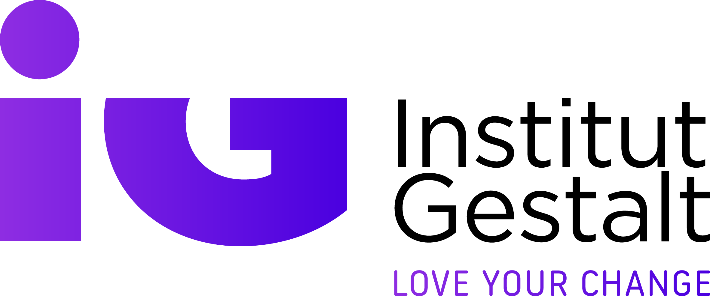

Reels · 9:16
Si ya acompañas a personas, esto va contigo.
Docente del InstitutFormación en Terapia Gestalt
Institut GestaltPublicidad
Descargar el dosier
Anuncios · Institut Gestalt
Hemos revisado los anuncios que tenéis activos en Meta. Primero definimos con vosotros quién es un lead cualificado. Después, tres anuncios pensados solo para ese perfil, para la Formación en Terapia Gestalt y para Constelaciones en Terapia Individual. Cada uno lleva a un formulario de tres preguntas que filtra, y el paso siguiente es siempre una presentación gratuita o una conversación, no un «más información».
Maqueta de Qualivo para Institut Gestalt · textos y datos de institutgestalt.com y de la Biblioteca de anuncios de Meta (4-nov-2026) · creatividades maquetadas con fotos generadas para la maqueta (en producción, fotos y vídeos reales del Institut) · no son anuncios publicados
Lo que vimos el 4 de noviembre en la Biblioteca de anuncios de Meta. Los hemos redibujado con vuestros textos tal cual (no son capturas) para poder compararlos con la propuesta.

Institut Gestalt🗓️ Inicio: Noviembre en Barcelona. Solicita info aquí
Para quien ya acompaña procesos individuales.
Institut Gestalt¿Acompañas procesos individuales y quieres incorporar las Constelaciones Familiares a tu consulta?… … más
Lo que comprobamos
Qué cambiaríamos
Cómo se anuncia Cercle Gestalt al mismo público
Cercle Gestalt anuncia su Formación Gestalt Integrativa con un vídeo activo desde julio: Tu principal herramienta como profesional eres tú
. Le habla a la persona del profesional, no al temario, y sale alguien en cámara. Que un anuncio siga activo tantos meses suele indicar que le funciona.
No proponemos copiarles. Proponemos hablar al mismo profesional con lo que es vuestro: más de 40 años acompañando procesos, la certificación de la AETG, Barcelona, Madrid y online, la presentación gratuita como puerta de entrada y una especialización que pocos ofrecen, Constelaciones en Terapia Individual.
Nos dijiste que lo que quieres mejorar es la calidad. Antes de cambiar un solo anuncio hay que acordar qué es para vosotros una petición buena. Esta es nuestra propuesta, a partir de vuestros programas y vuestros anuncios; tú sabes quién acaba matriculándose y la corregimos juntos.
Lead cualificado
Todavía no es el momento
Lo que te preguntamos hoy
Con ese perfil acordado se construye todo lo demás: el formulario pregunta exactamente eso, los anuncios le hablan solo a ese perfil y Meta aprende de quién llega a la entrevista y se matricula.
Es el mismo formulario instantáneo de Meta, con tres preguntas de opción múltiple y el modo «Mayor intención» (un paso para revisar los datos antes de enviar). Se rellena igual de rápido, pero ya no basta un toque por curiosidad, y cada respuesta llega al CRM con su etiqueta.
Nombre, email y WhatsApp: prerrellenados por Meta · paso final «Revisa tus datos»
Qué hace cada respuesta
Las respuestas deciden qué mensaje recibe cada persona en los primeros minutos. Los mensajes los escribís y aprobáis vosotros, y la entrevista la hace siempre una persona del Institut.
Empezamos solo con tres, cada uno para un momento del recorrido: el profesional que todavía no os conoce (A), quien ya tiene consulta y puede sumar Constelaciones (D) y quien ya vino a la presentación (G). Medimos cuál trae entrevistas y matrículas, no solo formularios, y a partir de ahí añadimos.
Gestalt · público frío. Le habla al profesional que ya tiene oficio.
DVídeo a cámara · docenteLa familia entra en consultaConstelaciones · público frío. Vuestro mejor texto, en vídeo.
GImagen · storyEl siguiente paso es hablarGestalt y Constelaciones · quien ya fue a la presentación.
Hay algo que pocas formaciones enseñan: qué hacer con lo que pasa en la sesión, mientras pasa.
Docente del InstitutFormación en Terapia Gestalt
Institut GestaltHay algo que pocas formaciones enseñan: qué hacer con lo que está pasando en la sesión, mientras pasa. … más
Si ya acompañas a personas, esto va contigo.
Docente del InstitutFormación en Terapia Gestalt
Gancho · primera frase
Hay algo que pocas formaciones enseñan: qué hacer con lo que está pasando en la sesión, mientras pasa.
Texto principal
Hay algo que pocas formaciones enseñan: qué hacer con lo que está pasando en la sesión, mientras pasa. Si eres psicóloga, coach, educador o terapeuta, ya tienes oficio. La Formación en Terapia Gestalt te da un marco para trabajar con el aquí y ahora: con lo que la persona siente, con lo que evita y con lo que se mueve en ti mientras la acompañas. ✓ Certificada por la Asociación Española de Terapia Gestalt (AETG) ✓ Más de 40 años acompañando procesos ✓ Barcelona, Madrid y online Pide el dosier: te lo enviamos por WhatsApp junto con la fecha de la próxima presentación gratuita.
Guion del vídeo
Por qué
En una formación así, el docente es el producto: verle y oírle explicar una sesión convence más que cualquier tarjeta. La primera frase filtra sola: a quien no acompaña a nadie no le dice nada. Y el botón «Descargar» dice exactamente qué recibe.
¿Qué haces cuando, en una sesión individual, aparece toda la familia del cliente?
Docente del InstitutConstelaciones en Terapia Individual
Institut Gestalt¿Qué haces cuando, en una sesión individual, aparece toda la familia del cliente? … más
Constelaciones Familiares en tu consulta individual.
Online · desde el 17 de febreroPresentación gratuita: 27 de enero
Gancho · primera frase
¿Qué haces cuando, en una sesión individual, aparece toda la familia del cliente?
Texto principal
¿Qué haces cuando, en una sesión individual, aparece toda la familia del cliente? La formación en Constelaciones Familiares en Terapia Individual es para quien ya acompaña procesos y quiere trabajar con el sistema familiar dentro de su propia consulta. 🗓️ Empieza el 17 de febrero de 2027 💻 Online, los miércoles de 17 a 21 h 🎥 Presentación gratuita por Zoom el 27 de enero Apúntate a la presentación y te enviamos el enlace por WhatsApp.
Guion del vídeo
Por qué
Vuestro anuncio de Constelaciones ya le habla a quien acompaña procesos. La idea es pasarlo a vídeo con un docente y cambiar «Más información» por un paso con fecha: la presentación del 27 de enero. Cuál rinde mejor lo dirán vuestros datos.
Institut GestaltYa viste la presentación. El siguiente paso es una conversación. … más
Gancho · primera frase
Ya viste la presentación. El siguiente paso es una conversación.
Texto principal
Ya viste la presentación. El siguiente paso es una conversación. Una entrevista previa con una persona del equipo del Institut: hablamos de tu momento profesional, de lo que buscas y de si esta formación encaja contigo. Sin compromiso. Si los dos lo vemos claro, puedes reservar tu plaza con 454 €. Elige el día y la hora que te vayan bien.
Por qué
Si entre la presentación y la entrevista se os enfría gente (lo confirmamos con vosotros), este anuncio solo lo ven quienes asistieron y les recuerda el paso exacto. La entrevista la sigue haciendo una persona del Institut; el anuncio solo le abre la agenda.
Psicólogos, coaches, educadores y terapeutas.
El equipo docente explica cómo se trabaja y responde a tus preguntas.
Una entrevista previa para ver juntos si la formación encaja con tu momento.
Formación certificada por la Asociación Española de Terapia Gestalt.
Institut GestaltAsí es el camino, paso a paso, antes de decidir nada. … más
Gancho · primera frase
Así es el camino, paso a paso, antes de decidir nada.
Texto principal
Así es el camino, paso a paso, antes de decidir nada. 1. Pides el dosier y te llega por WhatsApp. 2. Vienes a una presentación gratuita por Zoom. 3. Tienes una entrevista con una persona del equipo. 4. Si lo vemos claro los dos, reservas tu plaza. Formación en Terapia Gestalt, certificada por la AETG. Para psicólogos, coaches, educadores y terapeutas que ya acompañan a personas. En Barcelona, Madrid y online.
Por qué
Vuestro carrusel actual usa las tres tarjetas para decir lo mismo (marca, certificación, años). Aquí cada tarjeta responde una duda: ¿es para mí?, ¿qué pasa si dejo mis datos?, ¿me van a presionar? Ver que hay entrevista tranquiliza al profesional serio y desanima al que solo curiosea. El respaldo (AETG, +40 años) va al final, cuando ya interesa.
Formación en Terapia Gestalt. El equipo docente te cuenta cómo se trabaja y responde a tus preguntas.
Institut GestaltAntes de comprometerte con una formación así, conócela por dentro. … más
Ven a verla por dentro antes de decidir nada.
Gancho · primera frase
Antes de comprometerte con una formación así, conócela por dentro.
Texto principal
Antes de comprometerte con una formación así, conócela por dentro. Presentación gratuita de la Formación en Terapia Gestalt, por Zoom. El equipo docente explica cómo es el recorrido, cómo se trabaja y para quién es. Puedes preguntar todo lo que quieras. Te apuntas en un minuto y te enviamos el enlace y un recordatorio por WhatsApp.
Por qué
Quien ya os ha visto no necesita más información: necesita un paso pequeño y concreto. La presentación ya existe en vuestro recorrido; aquí pasa a ser lo que se anuncia. Quien se apunta y asiste es el mejor candidato a entrevista, y esa es la señal que queremos enseñarle a Meta.
Institut GestaltLos miércoles de 17 a 21 h, online, desde donde estés. … más
Gancho · primera frase
Los miércoles de 17 a 21 h, online, desde donde estés.
Texto principal
Los miércoles de 17 a 21 h, online, desde donde estés. Constelaciones Familiares en Terapia Individual empieza el 17 de febrero de 2027. Antes, el 27 de enero, hacemos una presentación gratuita por Zoom para que conozcas al equipo docente y resuelvas tus dudas. Apúntate y te recordamos la fecha por WhatsApp.
Por qué
Quien ya vio el vídeo sabe de qué va. Lo que le frena ahora es práctico: ¿cuándo?, ¿puedo compaginarlo con la consulta? Responderlo en la imagen ahorra preguntas y deja solo un paso: la fecha del 27.
Llevaba años como psicóloga y sentía que algo se me escapaba en consulta.
Laia · psicóloga, BarcelonaTestimonio de ejemplo
Institut Gestalt«Llevaba años como psicóloga y sentía que algo se me escapaba en consulta.» … más
Ahora me quedo con lo que pasa en la sesión, en vez de correr a la siguiente técnica.
Jordi · educador social, onlineTestimonio de ejemplo
Gancho · primera frase Ejemplo
«Llevaba años como psicóloga y sentía que algo se me escapaba en consulta.»
Texto principal Ejemplo
«Llevaba años como psicóloga y sentía que algo se me escapaba en consulta. En la formación aprendí a quedarme con lo que pasaba en la sesión, en vez de correr a la siguiente técnica.» — Laia, psicóloga en Barcelona Si te reconoces en esto, pide el dosier de la Formación en Terapia Gestalt. Te lo enviamos por WhatsApp con la fecha de la próxima presentación gratuita.
Por qué
Un profesional se fía de otro profesional. Las frases y los nombres de esta maqueta son inventados: el anuncio real se graba con alumnos o exalumnos que quieran participar y den su consentimiento, con sus palabras. Mejor varios perfiles (psicóloga, coach, enfermera, terapeuta corporal) para que cada uno se vea reflejado.
Cosas que se pueden cambiar esta semana en el Administrador de anuncios, antes de producir nada nuevo.
| Qué vemos | Por qué importa | Arreglo |
|---|---|---|
| Formularios instantáneos (desde fuera no vemos sus preguntas) | Si no filtran, Meta optimiza para quien rellena y hay que llamar a todos para saber quién encaja. Lo revisamos con vosotros. | Añadir las 3 preguntas (perfil, formación, cuándo) y activar «Mayor intención». |
| Botón «Más información» / «Ver detalles» | No dice qué recibe la persona al dejar sus datos. | «Descargar» cuando se ofrece el dosier; «Registrarte» cuando se ofrece la presentación. |
| Carrusel con la marca en las tres tarjetas | Habla del curso; no dice para quién es ni qué pasa después. Cómo rinde solo lo sabéis vosotros. | Una duda por tarjeta y el camino a la vista (anuncio B). |
| «Inicio: Noviembre en Barcelona. Solicita info aquí» | Con el inicio ya encima, el anuncio caduca en días. Y la primera línea habla del curso, no del profesional. | Empezar por el profesional y llevar a la próxima presentación gratuita, sea cual sea la convocatoria. |
| Constelaciones: buen texto, paso vago | El texto ya filtra bien, pero el siguiente paso no tiene fecha. | Poner la presentación del 27 de enero como destino (anuncios D y E). |
Revisado el 4-nov-2026 en la Biblioteca de anuncios de Meta (España), página Institut Gestalt y página de Cercle Gestalt. Puede haber versiones de los anuncios que la Biblioteca no muestra. Los testimonios y nombres de esta página son de ejemplo.